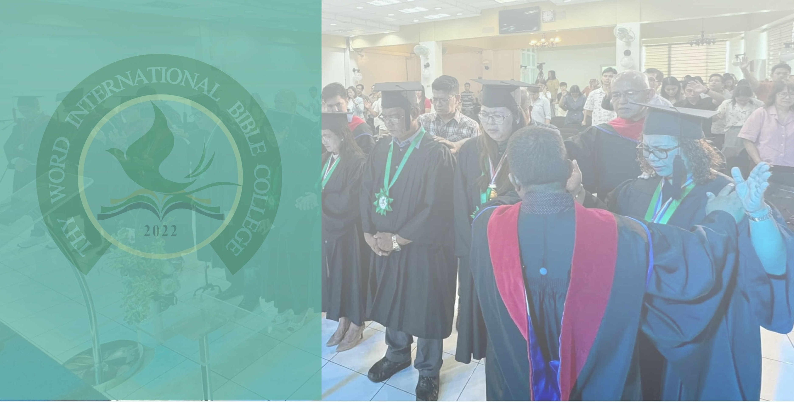
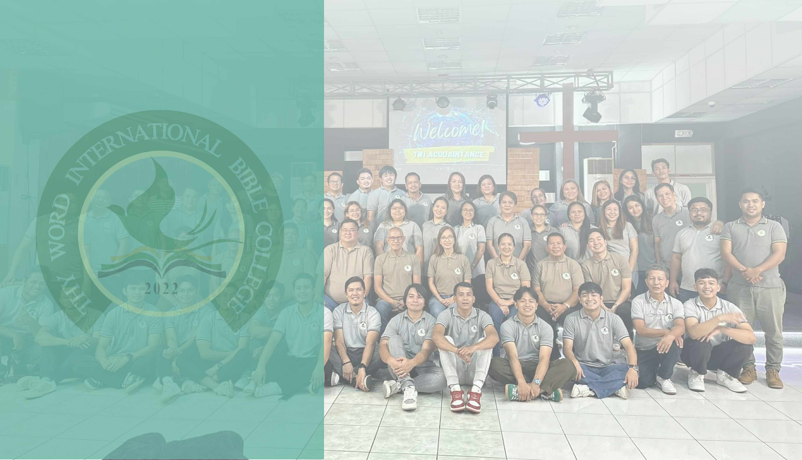

Subjects · Calendar · Research · Academic Information
TWIBC offers programs designed to equip students with biblical knowledge, spiritual maturity, and practical ministry skills. All programs are rooted in Pentecostal tradition and aligned with the Assemblies of God Statement of Fundamental Truths.

Certificate ProgramA 2-year foundational program equipping believers with essential biblical knowledge, theological grounding, and practical ministry skills for effective service in the local church and community. Ideal for those called to ministry at any level.

Bachelor's DegreeA comprehensive bachelor's degree providing advanced training in theology, biblical studies, pastoral leadership, homiletics, and missions. This program prepares graduates for full-time pastoral ministry, church planting, and cross-cultural evangelism.
"The harvest is plentiful but the laborers are few. Ask the Lord of the harvest, therefore, to send out workers into his harvest field."
Matthew 9:37–38 · The calling behind every TWIBC programTWIBC offers a Spirit-centered curriculum covering biblical theology, pastoral ministry, evangelism, missions, and practical leadership. Select a program below to explore the course offerings by year.
* Subject list is representative. Download the official curriculum for the complete and up-to-date list.
* Subject list is representative. Download the official curriculum for the complete and up-to-date list.
The TWIBC academic year is divided into two main semesters with a summer term. All dates are subject to adjustment by the Academic Office — contact the college for the latest calendar updates.
The academic calendar is updated each school year by the TWIBC Academic Office. Dates for chapel services, special convocations, and ministry activities are announced separately. For the most current schedule, contact the college at 0920 929 0388 or twibiblecollege@gmail.com.
The Research Department of Thy Word International Bible College Bataan exists to strengthen the academic and spiritual formation of students, faculty, and church partners by fostering a culture of biblical scholarship, Pentecostal theology, and practical ministry research. Grounded in the Assemblies of God commitment to the authority of Scripture and the empowerment of the Holy Spirit, the department provides resources, training, and guidance to help students become faithful interpreters of God's Word and effective communicators of the Gospel.
The Research Department also serves as a hub for producing scholarly papers, ministry projects, and contextual studies that address the needs of the church and society in Bataan, the Philippines, and beyond.
All research must affirm the authority of Scripture and align with the Assemblies of God Statement of Fundamental Truths. Emphasis is given to Spirit-led insights that strengthen the faith and practice of the Church.
Students and faculty are expected to uphold honesty, originality, and proper citation in all research outputs.
Areas of study include biblical theology, pastoral ministry, missions, evangelism, church history, Christian education, and Pentecostal spirituality.
Approved student theses, faculty research, and ministry studies may be archived in the TWIBC Library for future reference.
Faculty mentors will guide students in developing strong research methods. Group research, church surveys, and community-based studies are encouraged as part of holistic ministry training.
The Research Department provides access to books, journals, digital databases, and other learning tools. Students are encouraged to maximize these resources in both academic writing and ministry development.
Important academic policies, grading standards, and procedures that govern student life and scholastic conduct at TWIBC.
| Percentage | Grade | Description |
|---|---|---|
| 98–100% | 1.0 | Excellent |
| 95–97% | 1.25 | Superior |
| 92–94% | 1.5 | Very Good |
| 89–91% | 1.75 | Good |
| 86–88% | 2.0 | Satisfactory |
| 83–85% | 2.25 | Fair |
| 80–82% | 2.5 | Passing |
| 77–79% | 2.75 | Conditional |
| 75–76% | 3.0 | Minimum Pass |
| Below 75% | 5.0 | Failed |
Regular attendance is a vital part of spiritual and academic formation at TWIBC. Students are expected to attend all scheduled classes, chapel services, and ministry activities.
TWIBC recognizes academic excellence and provides guidance to students who need additional support.
Examinations are held at the end of each grading period. Students must comply with all examination requirements.
Spiritual formation is at the heart of the TWIBC experience. Students are expected to actively participate in all chapel and ministry activities.
To qualify for graduation and receive their degree or certificate, students must fulfill all academic and ministry requirements.
For program inquiries, enrollment information, or to request an academic consultation, contact the TWIBC office directly.